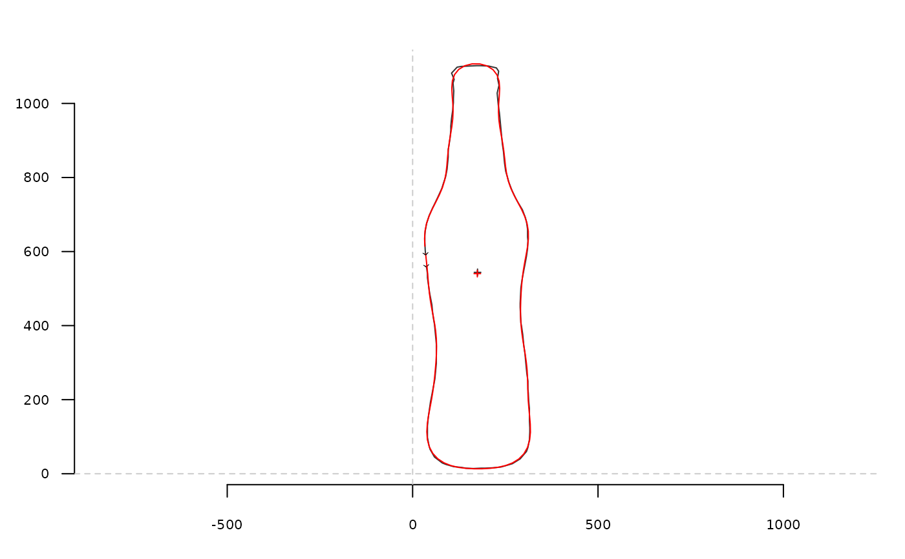

efourier_i uses the inverse elliptical Fourier transformation to
calculate a shape, when given a list with Fourier coefficients, typically
obtained computed with efourier.
Details
See efourier for the mathematical background.
References
Claude, J. (2008) Morphometrics with R, Use R! series, Springer 316 pp. Ferson S, Rohlf FJ, Koehn RK. 1985. Measuring shape variation of two-dimensional outlines. Systematic Biology 34: 59-68.
See also
Other efourier:
efourier(),
efourier_shape()
Examples
coo <- bot[1]
coo_plot(coo)
ef <- efourier(coo, 12)
ef
#> $an
#> [1] -143.1142910 5.2925309 22.9922936 -11.3596452 -14.9412217
#> [6] -5.4200881 5.7177112 0.4509076 0.3107020 -3.1633079
#> [11] 0.2814646 3.4927761
#>
#> $bn
#> [1] -13.8501141 -21.8994092 11.4235084 13.5870435 -12.6401807 2.5050679
#> [7] 5.1968464 -0.5366171 -1.0431706 1.0823659 2.3427969 0.1022387
#>
#> $cn
#> [1] 64.44753053 -3.15375656 -17.96822626 5.76052596 7.17390949
#> [6] -2.98410094 -1.20013013 1.18299684 -0.36305436 -0.46782525
#> [11] 0.67134872 0.08954658
#>
#> $dn
#> [1] -484.90299209 -1.04774048 42.07408510 3.40654863 -9.19128141
#> [6] -2.99359284 0.96722479 2.22582484 0.02026172 -2.26134728
#> [11] -0.04679906 0.80569603
#>
#> $ao
#> [1] 349.02
#>
#> $co
#> [1] 1080.921
#>
efi <- efourier_i(ef)
coo_draw(efi, border='red', col=NA)
